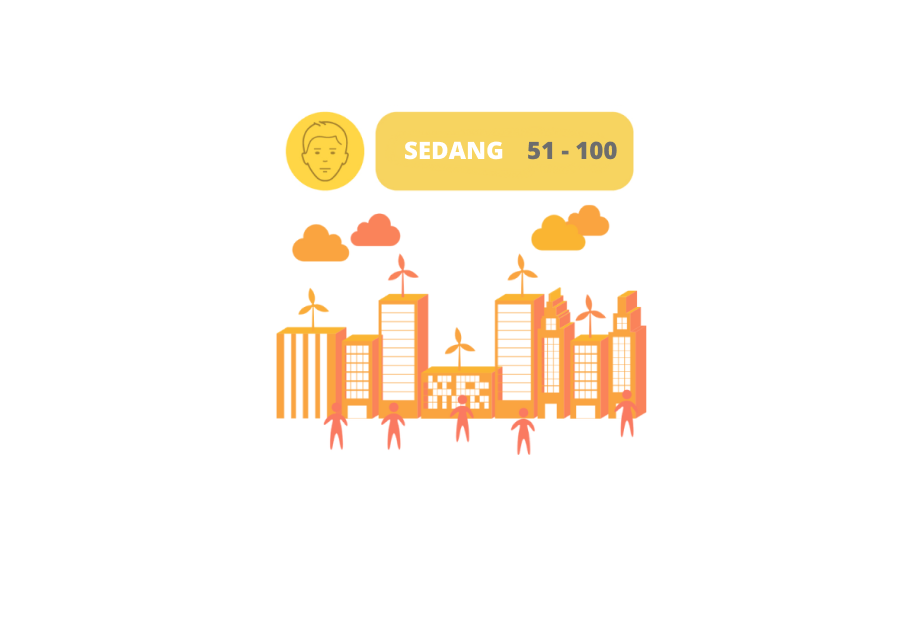

AQI Level

AQI Level Sedang mengindikasikan adanya sedikit penurunan kualitas udara dari tingkat yang baik. Beberapa ciri-ciri terkait AQI Level Sedang meliputi:
Peningkatan polusi udara pada tingkat ini dapat menyebabkan penurunan jarak pandang. Partikel-partikel polutan dapat membuat udara terlihat keruh atau kabur.
Dampak terbatas pada kesehatan: Pada tingkat ini, polusi udara mungkin tidak mengakibatkan efek kesehatan yang signifikan pada individu yang sehat secara umum. Namun, individu yang sensitif atau memiliki kondisi pernapasan yang mendasar seperti asma atau penyakit paru-paru mungkin mengalami sedikit ketidaknyamanan.
Disarankan untuk tetap waspada, meskipun AQI Level Sedang tidak dianggap sebagai ancaman kesehatan yang serius, tetap penting untuk tetap waspada terhadap perubahan kondisi udara. Individu yang sensitif atau rentan mungkin perlu mengambil tindakan pencegahan tambahan, seperti mengurangi aktivitas luar ruangan yang intens.